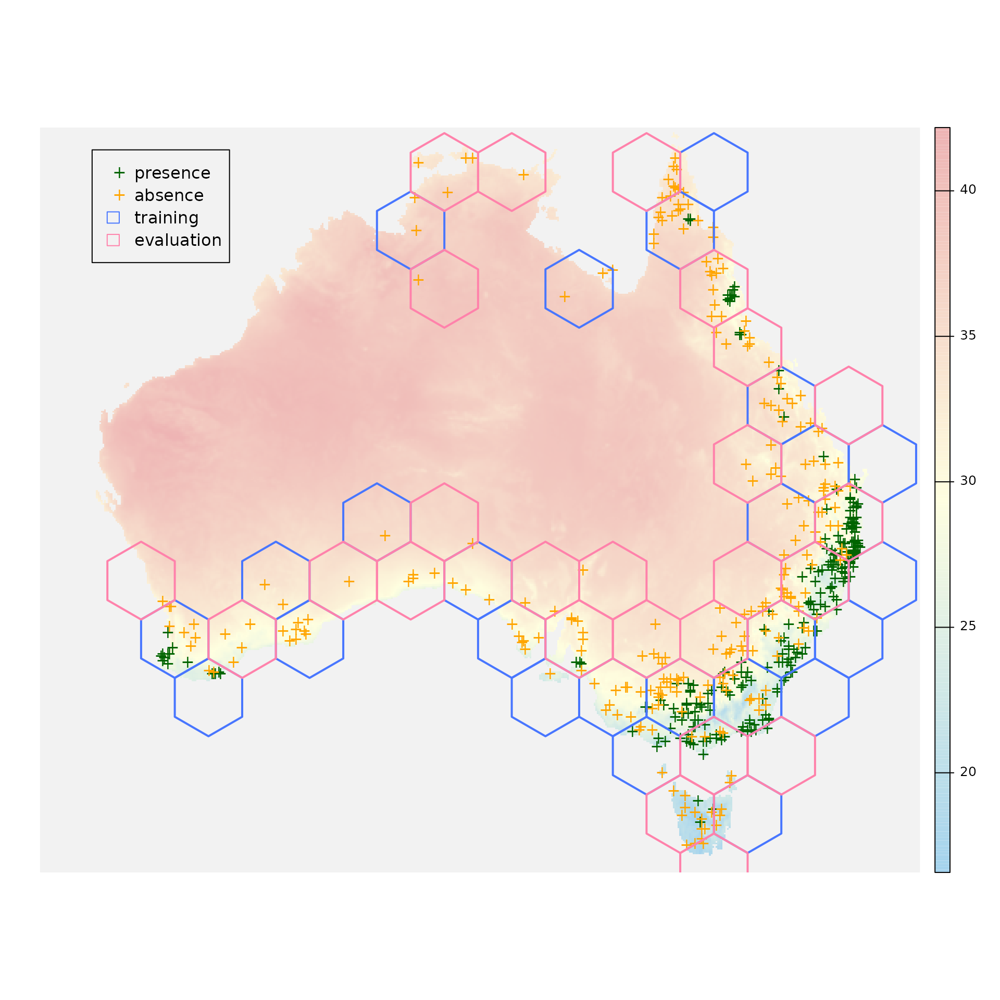
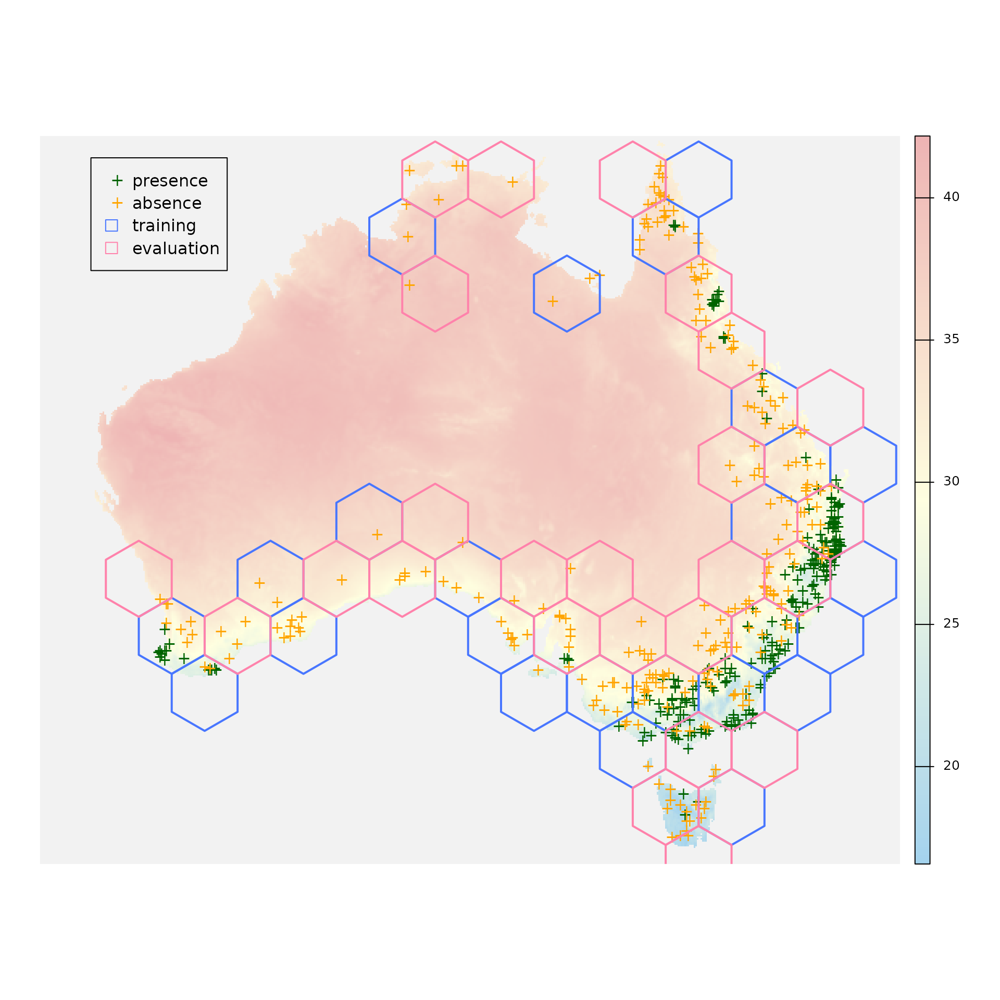

Introduction to package 'confcons'
Ákos Bede-Fazekas, Imelda Somodi
2025-08-29
Source:vignettes/introduction_to_confcons.Rmd
introduction_to_confcons.RmdConfidence and consistency: what are they and why using them?
‘confcons’ (confidence & consistency) is a light-weight, stand-alone R package designed to calculate the following two novel measures of predictive/potential distribution models (incl. species distribution models):
- confidence that measures the proportion of predictions that the model is confident in;
- consistency that measures how consistent the model is if the confidence in the training and evaluation subsets are compared.
While confidence serves as a replacement for the widely criticized goodness-of-fit measures, such as AUC, consistency is a proxy for model’s transferability (in space and time). Both measures can be calculated
- in a balanced way, when predicted presences and predicted absences are equally important. These measures are called confidence in predictions (‘CP’) and consistency of (or difference in confidences in) predictions (‘DCP’);
- in a way weighted towards the predicted presences, when certain positive presences are more important for the selected modelling purpose. These measures are called confidence in positive predictions (‘CPP’) and consistency of (or difference in confidences in) positive predictions (‘DCPP’).
Much more information about the measures can be read in this scientific paper:
Somodi I, Bede-Fazekas Á, Botta-Dukát Z, Molnár Z (2024): Confidence and consistency in discrimination: A new family of evaluation metrics for potential distribution models. Ecological Modelling 491: 110667. DOI: 10.1016/j.ecolmodel.2024.110667.
Functions for calculating confidence and consistency
Three small functions, thresholds(),
confidence() and consistency(), belong to the
core of the package. A wrapper function called measures()
utilizes these workhorse functions and calculates every measures for us
optionally along with some traditional measures, such as AUC and
maxTSS.
In the example below we’ll see how these function work and what are their parameters and returned value. For further details, please consult with the help page of the selected function and the examples given there.
Also, in the last section, we’ll see how multiple models can be
evaluated in a for loop, lapply(), or the
package ‘ENMeval’.
Workflow
Introduction
Here, we’ll go through the main steps of a typical workflow by:
- loading some environmental and presence-absence data using the example dataset of package ‘blockCV’;
- splitting the dataset to training and evaluation subset using spatial blocks;
- training some simple models on the training subset;
- making predictions to the whole dataset;
- evaluating our models; and
- interpreting the measures.
First, we install package ‘confcons’ and their dependencies needed for this tutorial (incl. ‘terra’, ‘sf’, ‘blockCV’, ‘ranger’ and ‘ROCR’):
install.packages("confcons", dependencies = TRUE)If installed, we can attach these packages to the R session (and suppress the not too important warnings about the R version under the packages were built):
suppressWarnings(library(terra))
#> terra 1.8.60
suppressWarnings(library(sf))
#> Linking to GEOS 3.12.1, GDAL 3.8.4, PROJ 9.4.0; sf_use_s2() is TRUE
suppressWarnings(library(blockCV))
#> blockCV 3.2.0
suppressWarnings(library(ranger))
suppressWarnings(library(ROCR))
suppressWarnings(library(ecospat))
suppressWarnings(library(ENMeval))
#> This is ENMeval version 2.0.5.2.
#> For worked examples, please consult the vignette: <https://jamiemkass.github.io/ENMeval/articles/ENMeval-2.0-vignette.html>.
suppressWarnings(library(confcons))Data preparation
Let’s open the environmental raster that contains four climatic layers at 5’ resolution in GDA2020 (Geocentric Datum of Australia) projection:
environment <- terra::rast(list.files(system.file("extdata/au/", package = "blockCV"), full.names = TRUE))
terra::nlyr(environment)
#> [1] 4
(predictors <- names(environment))
#> [1] "bio_12" "bio_15" "bio_4" "bio_5"
terra::crs(x = environment, describe = TRUE)$name
#> [1] "GDA2020 / GA LCC"
terra::res(environment)
#> [1] 8558.341 8558.341We open also the occurrence data from a .csv file and convert them to Simple Features:
occurrences <- read.csv(system.file("extdata/", "species.csv", package = "blockCV"))
occurrences <- sf::st_as_sf(x = occurrences,
coords = c("x", "y"),
crs = terra::crs(environment))For further details on the dataset, please refer to the vignette of
package blockCV:
vignette("tutorial_1")Now we split the study region to training and evaluation parts using random spatial blocks and convert the resulted blocks to Simple Features:
blocks <- blockCV::cv_spatial(x = occurrences,
column = "occ",
r = environment,
size = 350000,
k = 2,
selection = "random",
iteration = 50,
seed = 12345,
progress = FALSE,
report = FALSE,
plot = TRUE)
blocks_sf <- sf::st_as_sf(x = blocks$blocks)Let’s see where are our presence and absence points and also which polygons will be used for training and which ones for evaluation:
plot(x = environment[["bio_5"]], axes = FALSE, col = colorRampPalette(c("lightskyblue2", "lightyellow1", "rosybrown2"))(255), colNA = "gray95")
plot(x = occurrences[occurrences$occ == 1, ], pch = "+", col = "darkgreen", add = TRUE)
plot(x = occurrences[occurrences$occ == 0, ], pch = "+", col = "orange", add = TRUE)
plot(x = sf::st_geometry(blocks_sf[blocks_sf$folds == 1, ]), col = "transparent", border = "royalblue1", lwd = 2, add = TRUE)
plot(x = sf::st_geometry(blocks_sf[blocks_sf$folds == 2, ]), col = "transparent", border = "palevioletred1", lwd = 2, add = TRUE)
legend(x = -2100000,
y = -1300000,
legend = c("presence", "absence", "training", "evaluation"),
col = c("darkgreen", "orange", NA, NA),
pch = c("+", "+", NA, NA),
border = c(NA, NA, "royalblue1", "palevioletred1"),
fill = c(NA, NA, "transparent", "transparent"))
We start to build a data.frame that will contain
- coordinates (longitude and latitude) of the presence and absence locations,
- the predictor values in the presence and absence locations,
- the observed occurrences (i.e. 1 or 0),
- the training mask (
TRUEfor the location later used for model training,FALSEfor evaluation locations), and - the predicted probabilities of occurrence (later appended).
sf::st_coordinates() provides the coordinates and
raster::extract() gathers the predictors from the studied
locations for us. blocks$folds[[1]] contains two vectors of
indices. We’ll use the first vector for training (and the second one for
evaluation).
coordinates <- sf::st_coordinates(occurrences)
colnames(coordinates) <- c("longitude", "latitude")
dataset <- cbind(coordinates,
as.data.frame(terra::extract(x = environment,
y = occurrences,
ID = FALSE)))
dataset$occurrences <- occurrences$occ
dataset$training_mask <- (1:nrow(occurrences)) %in% blocks$folds_list[[1]][[1]]
str(dataset)
#> 'data.frame': 500 obs. of 8 variables:
#> $ longitude : num 1313728 1176795 -1741599 1099770 1279495 ...
#> $ latitude : num -2275453 -1916003 -3927213 -4124055 -3901538 ...
#> $ bio_12 : num 1287 1115 959 610 553 ...
#> $ bio_15 : num 93.8 118.6 85.1 22.8 15.4 ...
#> $ bio_4 : num 324 241 347 559 585 ...
#> $ bio_5 : num 31.2 29.4 28 31 31.4 ...
#> $ occurrences : int 0 0 1 1 0 0 0 0 1 0 ...
#> $ training_mask: logi TRUE TRUE FALSE FALSE TRUE TRUE ...Training models and making predictions
Now the data.frame contains all of the information
needed to train predictive distribution models. For the sake of this
example, we will create two simple models:
- a Generalized Linear Model (GLM) with a linear formula (i.e., without interactions) and stepwise predictor selection, and
- a Random Forest (RF) model with 10000, 8-level trees (the parameters were deliberately set to obtain an overfitted model).
linear_formula <- as.formula(paste0("occurrences ~ ", paste(predictors, collapse = " + ")))
model_glm <- step(trace = 0,
object = glm(formula = linear_formula,
family = binomial(link = "logit"),
data = dataset[dataset$training_mask, ]))
dataset$predictions_glm <- predict(object = model_glm,
newdata = dataset,
type = "response")The GLM model was trained on the training subset
(dataset[dataset$training_mask, ]) but all of the studied
locations were used for prediction (i.e. training and evaluation
subsets). A new column called ‘predictions_glm’ was appended to the
data.frame. We repeat the same procedure, now training the
RF model:
model_rf <- ranger::ranger(formula = linear_formula,
data = dataset[dataset$training_mask, ],
num.trees = 10000,
min.node.size = 10,
max.depth = 8,
seed = 12345,
verbose = FALSE,
classification = FALSE)
dataset$predictions_rf <- predict(object = model_rf,
data = dataset,
type = "response",
verbose = FALSE)$predictions
str(dataset[, c("occurrences", "training_mask", "predictions_glm", "predictions_rf")])
#> 'data.frame': 500 obs. of 4 variables:
#> $ occurrences : int 0 0 1 1 0 0 0 0 1 0 ...
#> $ training_mask : logi TRUE TRUE FALSE FALSE TRUE TRUE ...
#> $ predictions_glm: num 0.444 0.309 0.424 0.32 0.297 ...
#> $ predictions_rf : num 0.059859 0.334737 0.875771 0.00106 0.000338 ...Evaluation and interpretation
Models are trained, predictions are done, so one step is missing: the evaluation. This is where package ‘confcons’ will become useful…
Let’s take a look at the lower (mean predicted value in the absence
locations) and upper (mean predicted value in the presence locations)
thresholds below/above which we interpret the predicted values as
certain negatives and certain positives, respectively. We use function
thresholds() for this purpose, which needs the
integer/logical vector of the observed predictions (called
‘observations’) and the numeric vector of the predicted probabilities of
occurrence (called ‘predictions’) as input parameters. The function
returns two values (i.e., a named numeric vector of length 2).
(thresholds_glm <- thresholds(observations = dataset$occurrences,
predictions = dataset$predictions_glm))
#> threshold1 threshold2
#> 0.2958127 0.6034773
(thresholds_rf <- thresholds(observations = dataset$occurrences,
predictions = dataset$predictions_rf))
#> threshold1 threshold2
#> 0.1312359 0.7452445Between 0.30 and 0.60, the predictions of the GLM model can be treated as uncertain predictions. The same holds for the RF model between 0.13 and 0.75.
Now we calculate two of the proposed evaluation measures, confidence
in positive predictions (CPP) and confidence in predictions (CP). Both
should be calculated using the evaluation subset. Function
confidence() can calculate any of these measures, depending
on the value of its parameter ‘type’. If it’s ‘positive’, we’ll get CPP,
if it’s ‘neutral’, we’ll get CP that is not weighted towards the
positive predictions. Beyond ‘type’ and the two previously mentioned
parameters (‘observations’ and ‘predictions’) one more parameter is
needed: ‘thresholds’. Of course, the previously calculated thresholds
will perfectly suit for this purpose.
conf_P_eval <- confidence(observations = dataset$occurrences[!dataset$training_mask],
predictions = dataset$predictions_glm[!dataset$training_mask],
thresholds = thresholds_glm,
type = "positive")
conf_P_eval
#> [1] 0.49
conf_N_eval <- confidence(observations = dataset$occurrences[!dataset$training_mask],
predictions = dataset$predictions_glm[!dataset$training_mask],
thresholds = thresholds_glm,
type = "neutral")
conf_N_eval
#> [1] 0.575There is not so much difference between the two measures. Whether we
should use CPP or CP for describing the confidence of our model depends
on the main aim of our model. Confidence should be between
0 and 1; the higher value indicates more
confidence. Our GLM is not super confident, since both CPP and CP are
relatively far from 1.
We are a bit curious whether the confidence of the model is higher or lower if is calculated for the training subset.
conf_P_train <- confidence(observations = dataset$occurrences[dataset$training_mask],
predictions = dataset$predictions_glm[dataset$training_mask],
thresholds = thresholds_glm,
type = "positive")
conf_P_train
#> [1] 0.6803279
conf_P_eval < conf_P_train
#> [1] TRUEOf course, the model is more confident in the training subset than in
the evaluation subset. This is absolutely normal (and would be strange
if the opposite occurs). Which is not evident is the difference between
the two and its interpretation. consistency() is the
function that does the magic for us: a simple subtraction… It needs one
of the two confidence measures (CPP or CP) for the training and the
evaluation dataset, and returns their difference.
consistency(conf_train = conf_P_train, conf_eval = conf_P_eval)
#> [1] -0.1903279A negative value between -1 and 0 is
normal. The higher the consistency is (i.e., the closer to
0), the more consistent the model is. Positive value might
be an artifact or indicates that the training and evaluation subsets
were accidentally swapped.
We have got familiar with the three core functions of the package:
thresholds(), confidence() and
consistency(). The question is right if we ask: why
should we call three different functions several times if we want to get
all the measures for our model?. Well, we don’t have to. There is a
wrapper function called measures() that calculates
everything for us.
It needs three vectors:
- the
integer/logicalvector of observed occurrences (‘observations’), - the
numericvector of predicted probabilities of occurrence (‘predictions’), and - the
logicalmask of the evaluation locations (‘evaluation_mask’).
Previously we calculated the mask of the training locations, so its
negation (!) will perfectly match this purpose:
measures(observations = dataset$occurrences,
predictions = dataset$predictions_glm,
evaluation_mask = !dataset$training_mask)
#> CP_train CP_eval DCP CPP_train CPP_eval DCPP
#> 0.6829268 0.5750000 -0.1079268 0.6803279 0.4900000 -0.1903279
measures(observations = dataset$occurrences,
predictions = dataset$predictions_rf,
evaluation_mask = !dataset$training_mask)
#> CP_train CP_eval DCP CPP_train CPP_eval DCPP
#> 0.8373984 0.5833333 -0.2540650 0.8373984 0.4680851 -0.3693133The result is a named numeric vector containing all of
the measures. It is more than needed. It is recommended to use
‘CPP_eval’ + ‘DCPP’, or, if predicted absences are as important as
predicted presences in our research, ‘CP_eval’ + ‘DCP’.
We can see that RF model is really confident (0.84) in its predictions if the training subset is studied, but this confidence sharply drops when switching to the evaluation subset (to 0.47). Hence, the RF model is not too consistent, which warns us that transferability issues might potentially occurs if used for extrapolation. The GLM model is much more consistent (-0.19 vs. -0.37), so we should select that one for extrapolation, e.g. in a climate change impact study.
If we have installed package ‘ROCR’, measures() can
provide the Area Under the ROC Curve (AUC) and the maximum of True Skill
Statistic (maxTSS) for us. We should simply switch the parameter
‘goodness’ from its default value (FALSE) to
TRUE.
measures(observations = dataset$occurrences,
predictions = dataset$predictions_glm,
evaluation_mask = !dataset$training_mask,
goodness = TRUE)
#> CP_train CP_eval DCP CPP_train CPP_eval DCPP AUC
#> 0.6829268 0.5750000 -0.1079268 0.6803279 0.4900000 -0.1903279 0.8403944
#> maxTSS
#> 0.5696565Evaluating multiple models
There is one another logical parameter, called ‘df’, by
which we can decide whether a one-row data.frame is more
suited for our analysis purposes.
measures(observations = dataset$occurrences,
predictions = dataset$predictions_rf,
evaluation_mask = !dataset$training_mask,
goodness = TRUE,
df = TRUE)
#> CP_train CP_eval DCP CPP_train CPP_eval DCPP AUC
#> 1 0.8373984 0.5833333 -0.254065 0.8373984 0.4680851 -0.3693133 0.8131043
#> maxTSS
#> 1 0.5577608For example, if we have several models (i.e., two in this example),
we can simply rbind() these rows in a for loop
or a lapply():
model_IDs <- c("glm", "rf")
for (model_ID in model_IDs) {
column_name <- paste0("predictions_", model_ID)
conf_and_cons <- measures(observations = dataset$occurrences,
predictions = dataset[, column_name, drop = TRUE],
evaluation_mask = !dataset$training_mask,
df = TRUE)
if (model_ID == model_IDs[1]) {
conf_and_cons_df <- conf_and_cons
} else {
conf_and_cons_df <- rbind(conf_and_cons_df, conf_and_cons)
}
}
rownames(conf_and_cons_df) <- model_IDs
conf_and_cons_df
#> CP_train CP_eval DCP CPP_train CPP_eval DCPP
#> glm 0.6829268 0.5750000 -0.1079268 0.6803279 0.4900000 -0.1903279
#> rf 0.8373984 0.5833333 -0.2540650 0.8373984 0.4680851 -0.3693133The lapply() solution:
conf_and_cons_list <- lapply(X = model_IDs,
FUN = function(model_ID) {
column_name <- paste0("predictions_", model_ID)
measures(observations = dataset$occurrences,
predictions = dataset[, column_name, drop = TRUE],
evaluation_mask = !dataset$training_mask,
df = TRUE)
})
conf_and_cons_df <- do.call(what = rbind,
args = conf_and_cons_list)
rownames(conf_and_cons_df) <- model_IDs
conf_and_cons_df
#> CP_train CP_eval DCP CPP_train CPP_eval DCPP
#> glm 0.6829268 0.5750000 -0.1079268 0.6803279 0.4900000 -0.1903279
#> rf 0.8373984 0.5833333 -0.2540650 0.8373984 0.4680851 -0.3693133One may want to evaluate several MaxEnt models (e.g. during the
hyperparameter tuning) using several goodness-of-fit and transferability
measures. In this case, we recommend using function
ENMevaluate() from package ENMeval. It
calculates AUC and the continuous Boyce index (CBI) automatically, but
the list of the calculated measures can be complemented with any
user-defined measures. For this, first, we define a function that
calculates confidence in positive predictions and
consistency of positive predictions from the argument
ENMevaluate() provides to the user-defined functions.
calculate_conf_and_cons <- function(vars) {
observations <- c(
rep(x = 1L, times = length(vars$occs.train.pred)),
rep(x = 0L, times = length(vars$bg.train.pred)),
rep(x = 1L, times = length(vars$occs.val.pred)),
rep(x = 0L, times = length(vars$bg.val.pred))
)
predictions <- c(vars$occs.train.pred, vars$bg.train.pred, vars$occs.val.pred, vars$bg.val.pred)
evaluation_mask <- c(
rep(x = FALSE, times = length(vars$occs.train.pred) + length(vars$bg.train.pred)),
rep(x = TRUE, times = length(vars$occs.val.pred) + length(vars$bg.val.pred))
)
measures <- confcons::measures(observations = observations, predictions = predictions, evaluation_mask = evaluation_mask, df = TRUE)[, c("CPP_eval", "DCPP")] # select two measures
colnames(measures) <- c("confidence", "consistency")
return(measures)
}Now, we perform a hyperparameter tuning (with varying feature classes and regularization multipliers) using spatial block cross-validation and display the CBI, the confidence and the consistency for each feature class × regularization multiplier combinations (averaged for the cross-validation folds).
hyperparameter_evaluation <- ENMeval::ENMevaluate(
occs = dataset[dataset$occurrences == 1, c("longitude", "latitude", predictors)],
bg = dataset[dataset$occurrences == 0, c("longitude", "latitude", predictors)],
tune.args = list(fc = c("L", "LQ", "LQH"),
rm = seq(from = 0.5, to = 1.5, by = 0.5)),
algorithm = "maxnet",
partitions = "block",
user.eval = calculate_conf_and_cons,
updateProgress = FALSE,
quiet = TRUE)
hyperparameter_evaluation@results[, c("fc", "rm", "cbi.val.avg", "confidence.avg", "consistency.avg")]
#> fc rm cbi.val.avg confidence.avg consistency.avg
#> 1 L 0.5 0.44900 0.5116402 -0.07994573
#> 2 LQ 0.5 0.94000 0.5892474 -0.06643251
#> 3 LQH 0.5 0.87450 0.6967532 -0.00937990
#> 4 L 1.0 0.48625 0.5182068 -0.07728052
#> 5 LQ 1.0 0.93325 0.6196672 -0.03829850
#> 6 LQH 1.0 0.91825 0.7610432 0.04924178
#> 7 L 1.5 0.50100 0.4966821 -0.10146804
#> 8 LQ 1.5 0.95125 0.5824163 -0.07255878
#> 9 LQH 1.5 0.89850 0.7334252 0.02739568According to the CBI values, the linear + quadratic features (LQ) with regularization multiplier set to 1.5 seems to be the best hyperparameter combination. However, confidence and consistency disagrees with CBI. According to the confidence measure, the best hyperparameter combinations are the LQH×1 and LQH×1.5 combinations, but their consistencies are suspiciously high, i.e., greater than 0, which suggests an artifact. Therefore we skip these combinations and find that the model with linear + quadratic + hinge features (LQH) with regularization multiplier set to 0.5 has the highest confidence and also the highest (but negative) consistency, so we select this hyperparameter combination for training the final MaxEnt model.